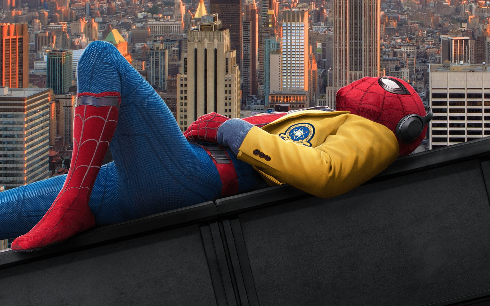
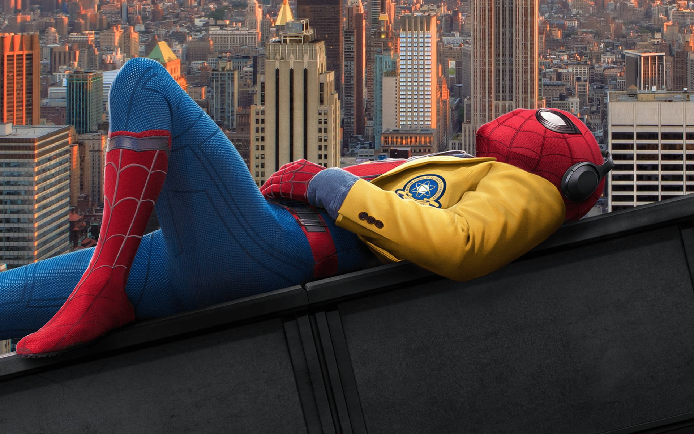

His Story
Peter Benjamin Parker is a former Midtown School of Science and Technology student who gained superhuman abilities and fought crime across New York City as the superhero Spider-Man. While he juggled his hero duties with the demands of his high-school life, he was recruited by Tony Stark to join the Avengers Civil War, putting Spider-Man into a brief conflict with Captain America. Parker was given a new suit as well as new Stark technology in exchange for his help and was allowed to keep them when he returned home to continue his own hero work.
While he continued to try and prove himself as a worthy hero in the eyes of Iron Man so he could join the Avengers, Parker began investigating the illicit criminal activities of Vulture, who was attempting to sell his Chitauri based weapons onto the black market, with only the assistance of his best friend Ned Leeds, while also trying to win his academic decathlon finals. Eventually, Parker gained the affections of classmate Liz Allan, but learned her father, Adrian Toomes, was Vulture. Spider-Man thwarted Vulture's robbery of a Stark Industries cargo plane, to which Stark showed his respect by offering Parker an official place with the Avengers. Parker turned this down in order to continue being a local hero in Queens, despite his Aunt May discovering his secret identity.
Parker was pulled back into the Avengers' conflict when the Black Order had invaded Earth, joining Stark as a stowaway to rescue Doctor Strange from space. Given a new Iron Spider armor, Parker, Stark and Strange joined forces with the Guardians of the Galaxy, joining their attempts to prevent Thanos from collecting the six Infinity Stones. But the heroes failed to defeat Thanos during the Battle of Titan; resulting in half of life being wiped out; including Parker. Five years later, Spider-Man was resurrected in the Blip, and rejoined the fight against Thanos, ultimately watching Stark sacrifice his life to defeat the Mad Titan.
The bereaved and traumatized Parker decided to take some time off his hero duties, while also being pressured by the press if he would be the next Iron Man, and seeking refuge on his school trip to Europe. However, despite wanting to focus his attention on winning the attention of Michelle Jones, Parker witnessed Hydro-Man's attack in Venice and was recruited by "Nick Fury" to work with Mysterio to defeat the Elementals. Dubbed Night Monkey after defeating Molten Man in Prague, Parker bequeathed Stark's glasses to Mysterio, only to discover that Mysterio manipulated him in doing so to gain access to Stark's weaponized drones to stage more threats. Recruiting Happy Hogan's help, Spider-Man traveled to London and defeated Mysterio, who died of a misfired gunshot on the Tower Bridge.
Upon Parker's return to New York, doctored footage was sent to The Daily Bugle incriminating him as the mastermind of the drone attacks, as well as the murderer of Mysterio, while exposing his true identity to the world. While he was eventually cleared of all charges with Matt Murdock's help, the resulting controversy upended his and his friends' futures, leading Parker to enlist Doctor Strange to cast a memory-altering spell, wishing to make the identity of Spider-Man a secret once more. However, Parker's repeated amendments mid-casting ruined the spell, resulting in a multiversal rift that unleashed foes of Spider-Man from alternate universes. Although intending to cure them before sending them back to avert their ill-fated deaths in their native universes, Green Goblin convinced the villains to betray Parker, ultimately resulting in his aunt's death. Parker then met two alternate versions of himself who helped him overcome his grief and cure their enemies in a battle on the Statue of Liberty. Faced with an impossible choice, Parker had Strange cast another spell to make their universe oblivious to his existence in order to protect the Multiverse from collapsing, erasing himself from his friends and allies' memories in his universe. Starting anew and believing himself to be dangerous to those around him, Parker decided to isolate himself from everyone, including his friends and allies, in order to keep them safe and resumed his duties undisturbed as an independent Spider-Man.
 
